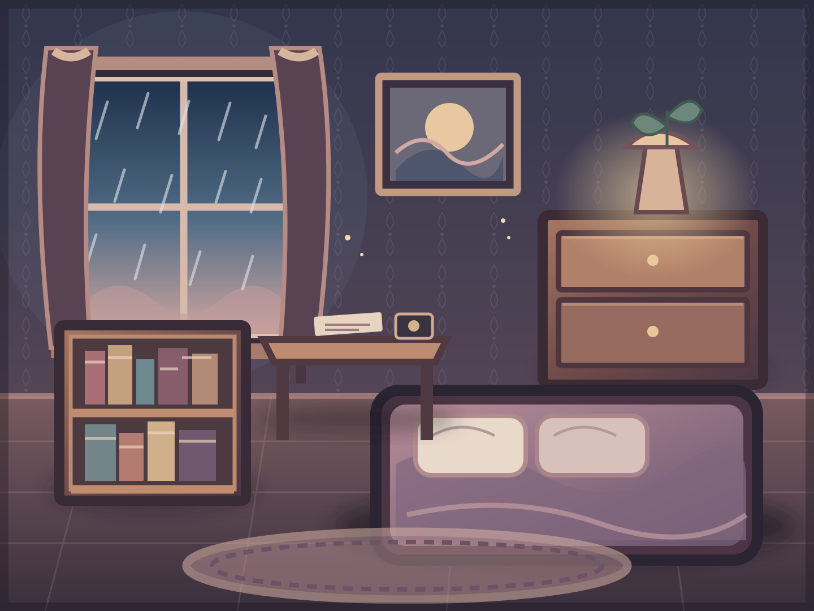

A reprodução acontece aqui no quarto, pelo player oficial do YouTube. Toque em uma faixa para começar.
Um ruído aparece sempre que a luz da janela pisca. Examine as evidências e selecione uma hipótese.
Selecione evidências e compare as hipóteses.
Monte uma página com recortes. Toque em uma peça para adicioná-la ou removê-la.